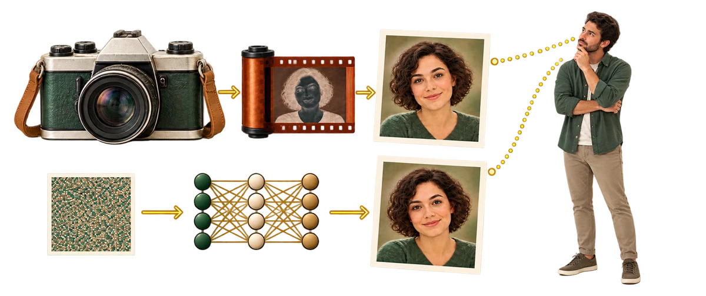

عکس واقعیه یا هوش مصنوعیه؟
این بازی فقط برای سرگرمی ساخته شده. هر وقت دوست داشتی، بیا و بازی کن!
منم سعی میکنم هر هفته عکسهای جدید و سختتری اضافه کنم؛ ببینیم به کجا میرسه.
اگه هم ایدهٔ جالب، پیشنهاد یا نقدی داری، خوشحال میشم برام ایمیل بزنی:
ohmydevops [at] gmail [dot] com